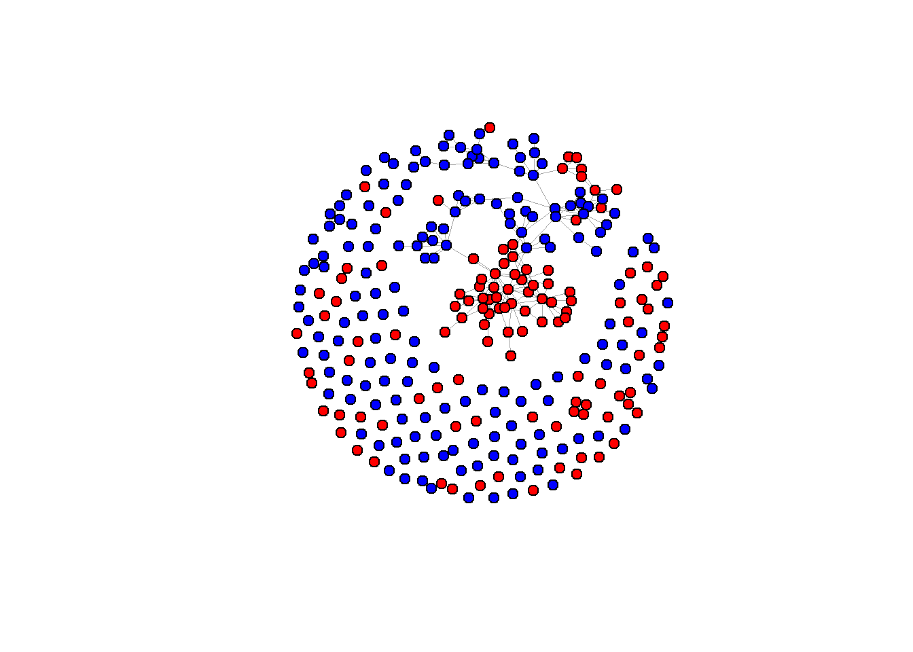

Research questions
RQ1: To what extent does interdisciplinary collaboration takes place
between the political science department and the sociology
department?
RQ2: Has the extend in which interdisciplinary collaboration takes
place changed over time?
RQ3: How does inter-department collaboration affect the researchers
position in the network. (centrality, brokerage, etc.)
RQ4: To what extent can interdepartmental collaboration be explained
by the physical distance (walking minutes) between the sociology and
political science department. (Propinquity)
#Functions and loading data
rm(list = ls())
fpackage.check <- function(packages) {
lapply(packages, FUN = function(x) {
if (!require(x, character.only = TRUE)) {
install.packages(x, dependencies = TRUE)
library(x, character.only = TRUE)
}
})
}
fsave <- function(x, file = NULL, location = "./data/processed/") {
ifelse(!dir.exists("data"), dir.create("data"), FALSE)
ifelse(!dir.exists("data/processed"), dir.create("data/processed"), FALSE)
if (is.null(file))
file = deparse(substitute(x))
datename <- substr(gsub("[:-]", "", Sys.time()), 1, 8)
totalname <- paste(location, file, "_", datename, ".rda", sep = "")
save(x, file = totalname) #need to fix if file is reloaded as input name, not as x.
}
fload <- function(filename) {
load(filename)
get(ls()[ls() != "filename"])
}
fshowdf <- function(x, ...) {
knitr::kable(x, digits = 2, "html", ...) %>%
kableExtra::kable_styling(bootstrap_options = c("striped", "hover")) %>%
kableExtra::scroll_box(width = "100%", height = "300px")
}
packages <- c("tidyverse", "scholar", "openalexR", "rvest", "jsonlite")
fpackage.check(packages)
## [[1]]
## NULL
##
## [[2]]
## NULL
##
## [[3]]
## NULL
##
## [[4]]
## NULL
##
## [[5]]
## NULL
library(igraph)
library(RSiena)
library(dplyr)
scholars <- fload("C:/Users/hanne/Downloads/scholars_20240924.rda")
fcolnet2 <- function(data = scholars,
university = c("RU", "VU","UU", "UvT", "RUG", "EUR", "UvA"),
discipline = c("sociology", "political science"),
waves = list(c(2015, 2018), c(2019, 2023)),
type = "all") {
# step 1
demographics <- do.call(rbind.data.frame, data$demographics)
demographics <- demographics %>%
mutate(
Universiteit1.22 = replace(Universiteit1.22, is.na(Universiteit1.22), ""),
Universiteit2.22 = replace(Universiteit2.22, is.na(Universiteit2.22), ""),
Universiteit1.24 = replace(Universiteit1.24, is.na(Universiteit1.24), ""),
Universiteit2.24 = replace(Universiteit2.24, is.na(Universiteit2.24), ""),
discipline.22 = replace(discipline.22, is.na(discipline.22), ""),
discipline.24 = replace(discipline.24, is.na(discipline.24), "")
)
sample <- which(
(demographics$Universiteit1.22 %in% university |
demographics$Universiteit2.22 %in% university |
demographics$Universiteit1.24 %in% university |
demographics$Universiteit2.24 %in% university) &
(demographics$discipline.22 %in% discipline |
demographics$discipline.24 %in% discipline)
)
demographics_soc <- demographics[sample, ]
scholars_sel <- lapply(scholars, "[", sample)
# step 2
ids <- demographics_soc$au_id
nwaves <- length(waves)
nets <- array(0, dim = c(nwaves, length(ids), length(ids)),
dimnames = list(wave = 1:nwaves, ids, ids))
dimnames(nets)
# step 3
df_works <- tibble(
works_id = unlist(lapply(scholars_sel$work, function(l) l$id)),
works_author = unlist(lapply(scholars_sel$work, function(l) l$author), recursive = FALSE),
works_year = unlist(lapply(scholars_sel$work, function(l) l$publication_year), recursive = FALSE)
)
df_works <- df_works[!duplicated(df_works), ]
# step 4
if (type == "first") {
for (j in 1:nwaves) {
df_works_w <- df_works[df_works$works_year >= waves[[j]][1] &
df_works$works_year <= waves[[j]][2], ]
for (i in 1:nrow(df_works_w)) {
ego <- df_works_w$works_author[i][[1]]$au_id[1]
alters <- df_works_w$works_author[i][[1]]$au_id[-1]
if (sum(ids %in% ego) > 0 & sum(ids %in% alters) > 0) {
nets[j, which(ids %in% ego), which(ids %in% alters)] <- 1
}
}
}
}
if (type == "last") {
for (j in 1:nwaves) {
df_works_w <- df_works[df_works$works_year >= waves[[j]][1] &
df_works$works_year <= waves[[j]][2], ]
for (i in 1:nrow(df_works_w)) {
ego <- rev(df_works_w$works_author[i][[1]]$au_id)[1]
alters <- rev(df_works_w$works_author[i][[1]]$au_id)[-1]
if (sum(ids %in% ego) > 0 & sum(ids %in% alters) > 0) {
nets[j, which(ids %in% ego), which(ids %in% alters)] <- 1
}
}
}
}
if (type == "all") {
for (j in 1:nwaves) {
df_works_w <- df_works[df_works$works_year >= waves[[j]][1] &
df_works$works_year <= waves[[j]][2], ]
for (i in 1:nrow(df_works_w)) {
egos <- df_works_w$works_author[i][[1]]$au_id
if (sum(ids %in% egos) > 0) {
nets[j, which(ids %in% egos), which(ids %in% egos)] <- 1
}
}
}
}
# output
output <- list()
output$data <- scholars_sel
output$nets <- nets
output$demographics <- demographics_soc
return(output)
}
##Table 1 nodes and ties
# Build the network
test <- fcolnet2(
data = scholars,
university = c("RU", "UvA"),
discipline = c("sociology", "political science"),
waves = list(c(2015, 2018), c(2019, 2023)),
type = c("all")
)
# First wave
test_w1 <- igraph::graph_from_adjacency_matrix(
test$nets[1,,],
mode = "undirected",
weighted = NULL,
diag = FALSE,
add.colnames = NULL
)
# Second wave
test_w2 <- igraph::graph_from_adjacency_matrix(
test$nets[2,,],
mode = "undirected",
weighted = NULL,
diag = FALSE,
add.colnames = NULL
)
# Suppose you have a list of graphs for each wave
graphs <- list(test_w1, test_w2)
# Create a data frame with nodes and edges for each wave
network_nodes_edges <- data.frame(
wave = seq_along(graphs),
nodes = sapply(graphs, vcount), # count vertices
edges = sapply(graphs, ecount) # count edges
)
# View the table
print(network_nodes_edges)
## wave nodes edges
## 1 1 282 169
## 2 2 282 237
##Dyad Census
# List of graphs (waves)
graphs <- list(test_w1, test_w2)
# Function to compute dyad census for a graph
dyad_summary <- function(g) {
dyads <- dyad_census(g) # returns null, asymmetric, mutual
data.frame(
wave = NA,
null_dyads = dyads$null,
asymmetric_dyads = dyads$asym,
mutual_dyads = dyads$mut
)
}
# Apply to all waves
dyad_census_table <- bind_rows(lapply(seq_along(graphs), function(i) {
df <- dyad_summary(graphs[[i]])
df$wave <- i
df
}))
## Warning: `dyad_census()` requires a directed graph.
## `dyad_census()` requires a directed graph.
# Reorder columns for readability
dyad_census_table <- dyad_census_table %>% select(wave, everything())
# Show the table
print(dyad_census_table)
## wave null_dyads asymmetric_dyads mutual_dyads
## 1 1 39452 0 169
## 2 2 39384 0 237
test <- fcolnet2(data = scholars,
university = c("RU", "UvA"),
discipline = c("sociology", "political science"),
waves = list(c(2015, 2018), c(2019, 2023)),
type = c("all"))
test_w2 <- igraph::graph_from_adjacency_matrix(
test$nets[2,,], #now, I take the second wave
mode = c("undirected"),
weighted = NULL,
diag = FALSE,
add.colnames = NULL
)
#Let us find ego characteristics.
#first fish out the data
df <- test$data
#same complicated structure as 'scholars' thus first make a dataframe from the list in which all info was saved.
df_ego <- do.call(rbind.data.frame, df$demographics)
#DO NOT MESS UP THE ORDER! THUS IF YOU JOIN THIS DATA WITH YOUR OWN DATA CHECK THAT ORDER REMAINED THE SAME!!
# Compute Fruchterman-Reingold layout
layout_fr <- layout_with_fr(test_w2)
plot(
test_w2,
layout = layout_fr,
vertex.color = ifelse(df_ego$discipline.24 == "sociology", "red", "blue"),
vertex.size = 6,
vertex.label = NA,
edge.width = 0.3,
edge.arrow.size = 0.2
)

# Build the network
test <- fcolnet2(
data = scholars,
university = c("RU", "UvA"),
discipline = c("sociology", "political science"),
waves = list(c(2015, 2018), c(2019, 2023)),
type = c("all")
)
# First wave
test_w1 <- igraph::graph_from_adjacency_matrix(
test$nets[1,,],
mode = "undirected",
weighted = NULL,
diag = FALSE
)
# Second wave
test_w2 <- igraph::graph_from_adjacency_matrix(
test$nets[2,,],
mode = "undirected",
weighted = NULL,
diag = FALSE
)
# Ego characteristics
df <- test$data
df_ego <- do.call(rbind.data.frame, df$demographics)
# Zelfde layout voor beide netwerken
set.seed(123)
layout_fr <- igraph::layout_with_fr(test_w1)
# Zet 2 plots naast elkaar
par(mfrow = c(1,2), mar = c(1,1,3,1))
# Shapes by university (case sensitive!)
vertex_shapes2 <- ifelse(df_ego$Universiteit.24 == "RU", "circle", "square")
vertex_shapes1 <- ifelse(df_ego$Universiteit.22 == "RU", "circle", "square")
# Replace NA values
vertex_shapes1[is.na(vertex_shapes1)] <- "none"
vertex_shapes2[is.na(vertex_shapes2)] <- "none"
# Check what we got
unique(vertex_shapes1)
## [1] "square" "circle" "none"
unique(vertex_shapes2)
## [1] "square" "circle" "none"
# Plot 1
plot(
test_w1,
layout = layout_fr,
vertex.color = ifelse(df_ego$discipline.22 == "sociology", "red", "blue"),
vertex.shape = vertex_shapes1,
vertex.size = 6,
vertex.label = NA,
edge.width = 0.3,
edge.arrow.size = 0.2,
main = "Wave 1: 2015–2018"
)
# Plot 2
plot(
test_w2,
layout = layout_fr,
vertex.color = ifelse(df_ego$discipline.24 == "sociology", "red", "blue"),
vertex.shape = vertex_shapes2,
vertex.size = 6,
vertex.label = NA,
edge.width = 0.3,
edge.arrow.size = 0.2,
main = "Wave 2: 2019–2023"
)
# Legend
legend("bottomleft",
legend = c("Sociology", "Political Science"),
col = c("red", "blue"),
pch = 19,
pt.cex = 1.5,
bty = "n")
legend("bottomright",
legend = c("RU", "UvA"),
pch = c(19, 15), # circle = 19, square = 15
pt.cex = 1.5,
bty = "n")
# --- Wave 1 ---
isolates_w1 <- which(degree(test_w1) == 0)
no_isolatesw1 <- delete_vertices(test_w1, isolates_w1)
# Vertex shapes
vertex_shapes1 <- ifelse(df_ego$Universiteit.22 == "RU", "circle", "square")
vertex_shapes1[is.na(vertex_shapes1)] <- "none"
vertex_shapes1 <- vertex_shapes1[-isolates_w1]
# Vertex colors
vertex_color1 <- ifelse(df_ego$discipline.22 == "sociology", "red", "blue")
vertex_color1 <- vertex_color1[-isolates_w1]
# --- Wave 2 ---
isolates_w2 <- which(degree(test_w2) == 0)
no_isolatesw2 <- delete_vertices(test_w2, isolates_w2)
# Vertex shapes
vertex_shapes2 <- ifelse(df_ego$Universiteit.24 == "RU", "circle", "square")
vertex_shapes2[is.na(vertex_shapes2)] <- "none"
vertex_shapes2 <- vertex_shapes2[-isolates_w2]
# Vertex colors
vertex_color2 <- ifelse(df_ego$discipline.24 == "sociology", "red", "blue")
vertex_color2 <- vertex_color2[-isolates_w2]
# Zelfde layout voor beide netwerken
set.seed(123)
layout_fr <- igraph::layout_with_fr(test_w1)
# Zet 2 plots naast elkaar
par(mfrow = c(1,2), mar = c(1,1,3,1))
# For Wave 1
set.seed(123) # for reproducible layout
layout1 <- layout_with_fr(no_isolatesw1) # Fruchterman-Reingold layout
plot(no_isolatesw1,
layout = layout1,
vertex.color = vertex_color1,
vertex.shape = vertex_shapes1,
vertex.size = 6,
vertex.frame.color = "gray",
vertex.label = NA,
edge.curved = 0.2,
edge.arrow.size = 0.1,
main = "Wave 1: 2015–2019"
)
# Wave 2
set.seed(123)
layout2 <- layout_with_fr(no_isolatesw2)
plot(no_isolatesw2,
layout = layout2,
vertex.color = vertex_color2,
vertex.shape = vertex_shapes2,
vertex.size = 6,
vertex.frame.color = "gray",
vertex.label = NA,
edge.curved = 0.2,
edge.arrow.size = 0.1,
main = "Wave 2: 2019–2023"
)
# --- Build the networks ---
test <- fcolnet2(
data = scholars,
university = c("RU", "UvA"),
discipline = c("sociology", "political science"),
waves = list(c(2015, 2018), c(2019, 2023)),
type = c("all")
)
# --- Function to count interdisciplinary ties ---
count_interdiscip <- function(adj_matrix, discipline_vec) {
edges <- which(adj_matrix != 0, arr.ind = TRUE)
sum(
(discipline_vec[edges[,1]] == "sociology" & discipline_vec[edges[,2]] == "political science") |
(discipline_vec[edges[,1]] == "political science" & discipline_vec[edges[,2]] == "sociology")
)
}
# --- Wave 1: clean NAs ---
valid_nodes_w1 <- which(!is.na(df_ego$discipline.22))
adj_w1_clean <- test$nets[1, valid_nodes_w1, valid_nodes_w1]
discipline_w1_clean <- df_ego$discipline.22[valid_nodes_w1]
interdiscip_w1 <- count_interdiscip(adj_w1_clean, discipline_w1_clean)
# --- Wave 2: clean NAs ---
valid_nodes_w2 <- which(!is.na(df_ego$discipline.24))
adj_w2_clean <- test$nets[2, valid_nodes_w2, valid_nodes_w2]
discipline_w2_clean <- df_ego$discipline.24[valid_nodes_w2]
interdiscip_w2 <- count_interdiscip(adj_w2_clean, discipline_w2_clean)
# --- Create summary table ---
interdiscip_table <- data.frame(
wave = c(1, 2),
interdisciplinary_ties = c(interdiscip_w1, interdiscip_w2)
)
# --- Show results ---
print(interdiscip_table)
## wave interdisciplinary_ties
## 1 1 22
## 2 2 32
#RSiena
##Setup
fpackage.check <- function(packages) {
lapply(packages, FUN = function(x) {
if (!require(x, character.only = TRUE)) {
install.packages(x, dependencies = TRUE)
library(x, character.only = TRUE)
}
})
}
fsave <- function(x, file = NULL, location = "./data/processed/") {
ifelse(!dir.exists("data"), dir.create("data"), FALSE)
ifelse(!dir.exists("data/processed"), dir.create("data/processed"), FALSE)
if (is.null(file))
file = deparse(substitute(x))
datename <- substr(gsub("[:-]", "", Sys.time()), 1, 8)
totalname <- paste(location, datename, file, ".rda", sep = "")
save(x, file = totalname) #need to fix if file is reloaded as input name, not as x.
}
fload <- function(filename) {
load(filename)
get(ls()[ls() != "filename"])
}
fshowdf <- function(x, ...) {
knitr::kable(x, digits = 2, "html", ...) %>%
kableExtra::kable_styling(bootstrap_options = c("striped", "hover")) %>%
kableExtra::scroll_box(width = "100%", height = "300px")
}
colorize <- function(x, color) {
sprintf("<span style='color: %s;'>%s</span>", color, x)
}
packages = c("RSiena", "devtools", "igraph")
fpackage.check(packages)
## [[1]]
## NULL
##
## [[2]]
## NULL
##
## [[3]]
## NULL
packages = c("RsienaTwoStep")
fpackage.check(packages)
## [[1]]
## NULL
# Make it an array
nets_correct <- aperm(test$nets, c(2, 3, 1))
dim(nets_correct)
## [1] 282 282 2
net_siena <- sienaDependent(nets_correct)
# ---------- 0. Voorbereiding ----------
# wave1 netwerk en disciplinevector
wave1 <- nets_correct[,,1] # matrix van ego x alter in wave 1
dept_num <- as.numeric(as.factor(df_ego$discipline.22))
# discipline NA's vervangen door een neutrale code (bijv. 99) om crashes te voorkomen
dept_num[is.na(dept_num)] <- 99
# ---------- 1. Proportie cross-department ties ----------
# TRUE als alter van andere discipline is
diff_dept_matrix <- outer(dept_num, dept_num, FUN = function(i, j) i != j)
# tel aantal cross-department ties per ego
cross_out_counts <- rowSums(wave1 * diff_dept_matrix, na.rm = TRUE)
# totale outdegree per ego
ego_outdeg <- rowSums(wave1, na.rm = TRUE)
# proportie cross-department ties
cross_prop <- ifelse(ego_outdeg > 0, cross_out_counts / ego_outdeg, 0)
# ---------- 2. Indirecte blootstelling ----------
# iemand heeft score 1 als hij zelf 0 heeft,
# maar een van zijn alters heeft een cross_prop > 0
indirect_flag <- rep(0, length(cross_prop))
for (i in seq_along(cross_prop)) {
alters <- which(wave1[i, ] != 0)
if (length(alters) > 0) {
if (cross_prop[i] == 0 && any(cross_prop[alters] > 0)) {
indirect_flag[i] <- 1
}
}
}
# ---------- 3. Categoriseren ----------
cross_score <- dplyr::case_when(
cross_prop == 0 & indirect_flag == 0 ~ 0,
cross_prop == 0 & indirect_flag == 1 ~ 1,
cross_prop > 0 & cross_prop <= 0.25 ~ 2,
cross_prop > 0.25 & cross_prop <= 0.5 ~ 3,
cross_prop > 0.5 ~ 4
)
# ---------- 4. Resultaat bekijken ----------
table(cross_score)
## cross_score
## 0 1 2 3 4
## 224 34 11 10 3
summary(cross_prop)
## Min. 1st Qu. Median Mean 3rd Qu. Max.
## 0.00000 0.00000 0.00000 0.02565 0.00000 0.66667
barplot(table(cross_score), main = "Distribution of Interdisciplinary Score", xlab = "Score", ylab = "Frequency")
# Voor dataframe voor RSiena:
df_ego$interdisc_w1 <- cross_score
interdisc_vec <- df_ego$interdisc_w1
interdisc_cov <- coCovar(interdisc_vec)
Categorie 0: geen interdisc. contact
Categorie 1: geen directe, wel indirecte blootstelling
Categorie 2: ≤ 25% interdisc.
Categorie 3: 25–50% interdisc.
Categorie 4: > 50% interdisc.
barplot(table(cross_score), main = "Distribution of Interdisciplinary Score", xlab = "Score", ylab = "Frequency")

# Make it an array
nets_correct <- aperm(test$nets, c(2, 3, 1))
dim(nets_correct)
## [1] 282 282 2
net_siena <- sienaDependent(nets_correct)
demographics_soc <- test$demographics
# Replace empty / missing with NA
demographics_soc$discipline.22[demographics_soc$discipline.22 == "missing"] <- NA
# Keep only the two real departments
dept_factor <- factor(demographics_soc$discipline.22,
levels = c("political science", "sociology"))
# Convert to numeric for RSiena
dept_num <- as.numeric(dept_factor)
# Create a covariate object (RSiena ignores NAs automatically)
dept_cov <- coCovar(dept_num)
table(dept_cov)
## dept_cov
## 1 2
## 140 106
###Model 1
# 1. Create the RSiena data object
mydata <- sienaDataCreate(net_siena, dept_cov, interdisc_cov)
# 2. Specify effects
myeff <- getEffects(mydata)
# Basic network structure effects
# effects
myeff <- getEffects(mydata)
myeff <- includeEffects(myeff, simX, interaction1 = "dept_cov") # only department homophily
## effectNumber effectName shortName include fix test initialValue parm
## 1 154 dept_cov similarity simX TRUE FALSE FALSE 0 0
myeff <- includeEffects(myeff, egoPlusAltX, interaction1="interdisc_cov")
## effectNumber effectName shortName include fix test initialValue parm
## 1 269 interdisc_cov ego and alt egoPlusAltX TRUE FALSE FALSE 0 0
#myeff <- includeEffects(myeff, transTriads)
myAlgorithm <- sienaAlgorithmCreate(modelType =c(net_siena=5), projname = "dept_cov")
## If you use this algorithm object, siena07 will create/use an output file dept_cov.txt .
ansM1 <- siena07(myAlgorithm, data = mydata, effects = myeff, returnDeps = TRUE)
ansM1
## Estimates, standard errors and convergence t-ratios
##
## Estimate Standard Convergence
## Error t-ratio
##
## Rate parameters:
## 0 Rate parameter 0.5228 ( 0.0474 )
##
## Other parameters:
## 1. eval degree (density) -2.9926 ( 0.1201 ) -0.0294
## 2. eval dept_cov similarity 1.8508 ( 0.2624 ) -0.0252
## 3. eval interdisc_cov ego and alt 0.2372 ( 0.0298 ) -0.0140
##
## Overall maximum convergence ratio: 0.0295
##
##
## Model Type:
## net_siena : Pairwise mutual model
##
##
## Total of 2094 iteration steps.
gof0 <- sienaGOF(ansM1, OutdegreeDistribution, verbose = FALSE, join = TRUE, varName = "net_siena")
plot(gof0, main = "")

